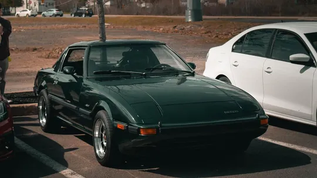
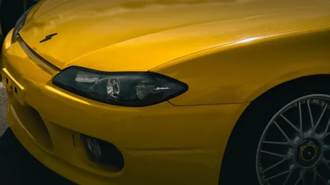
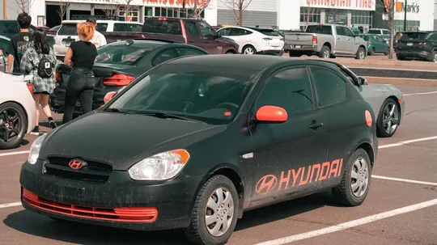
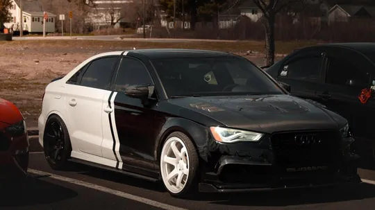

April – May 2023
YFC Autofest Pop-up Meet
The pop-up meet YFC Autofest and Clueless put on before the 2023 show: a green RX-7, a yellow Silvia S15, a red Miata, an Audi R8 with a big wing and a lot of stickers.

- Category
- Events & shows
- Posted
- April – May 2023
- Photographs
- 11
- 4 posts, linked below





More events.
Events & shows


Your car. The next feature.
DM @ln._photos with your car, a date and where you’d like to shoot.